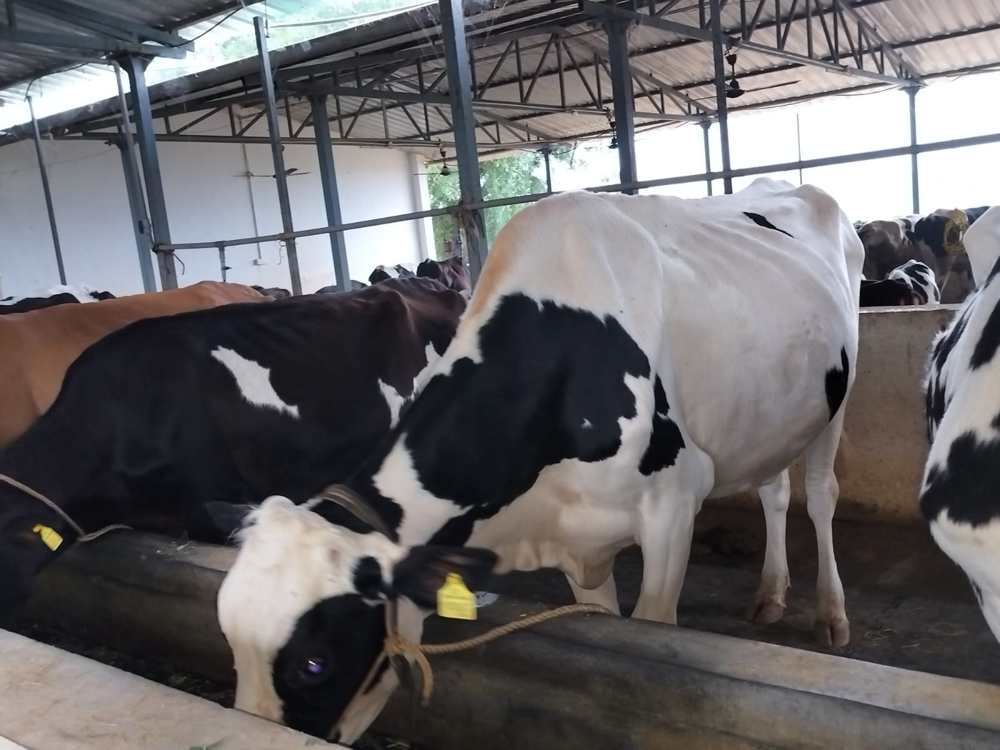
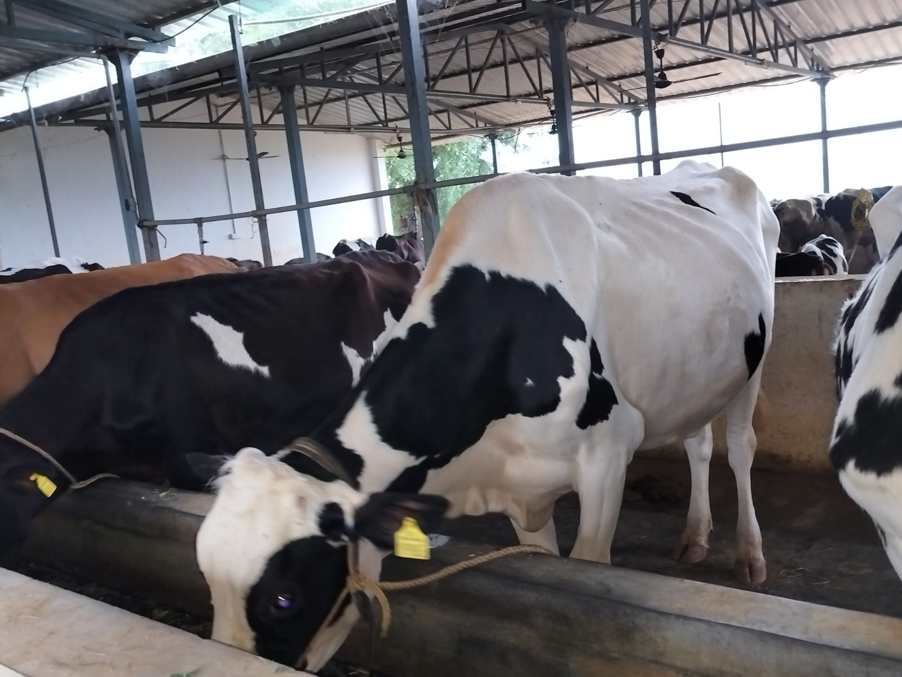

Diary Project Papampalli
In a strategic initiative aimed at uplifting rural communities and fostering economic sustainability, Rural Development Trust (RDT) has devised a targeted approach to empower specific individuals through the establishment of dairy projects. This transformative venture, initiated by RDT, seeks to not only provide financial assistance but also to catalyze the creation of dairy-based enterprises that contribute to the overall welfare of the villages. The process begins with RDT undertaking a meticulous sampling procedure to identify individuals who exhibit the potential and commitment to initiate and manage dairy projects effectively. This targeted sampling ensures that the chosen candidates possess the necessary skills, dedication, and understanding of the dairy industry to make the venture a success.
Once identified, the selected individuals become the torchbearers of change within their respective villages. RDT extends financial assistance to these pioneers, offering the necessary resources to establish and operationalize dairy projects. The financial support provided by RDT serves as the cornerstone for these individuals to embark on their journey as dairy entrepreneurs.
The selection of one or two persons for the initial phase of the dairy project is a strategic decision, tailored to the unique demographics and population size of each village. This thoughtful approach ensures that the scale of the dairy project aligns with the local context, optimizing its impact on the community. The establishment of dairy projects under RDT's guidance not only serves as an economic venture but also addresses critical aspects of nutrition and health within the villages. The dairy projects contribute to the production of milk, a valuable source of nutrition for the community. This dual-purpose initiative not only fosters economic empowerment but also enhances the overall well-being of the villagers through improved access to nutritious dairy products.
Key to the success of these dairy projects is the comprehensive support provided by RDT beyond just financial assistance. The selected individuals undergo specialized training programs that equip them with the knowledge and skills necessary to manage and sustain a dairy enterprise successfully. These training sessions cover various aspects of dairy farming, including animal husbandry, health management, and efficient dairy production practices.
Moreover, RDT ensures that the dairy project initiators receive ongoing updates, technical expertise, and exposure to best practices in the dairy industry. This continuous learning process enhances the entrepreneurs' capabilities, allowing them to adapt to evolving challenges and emerging opportunities within the dynamic dairy sector.
P. Sreenath Reddy, DK Thanda, Papampalli Dairy Project
 
